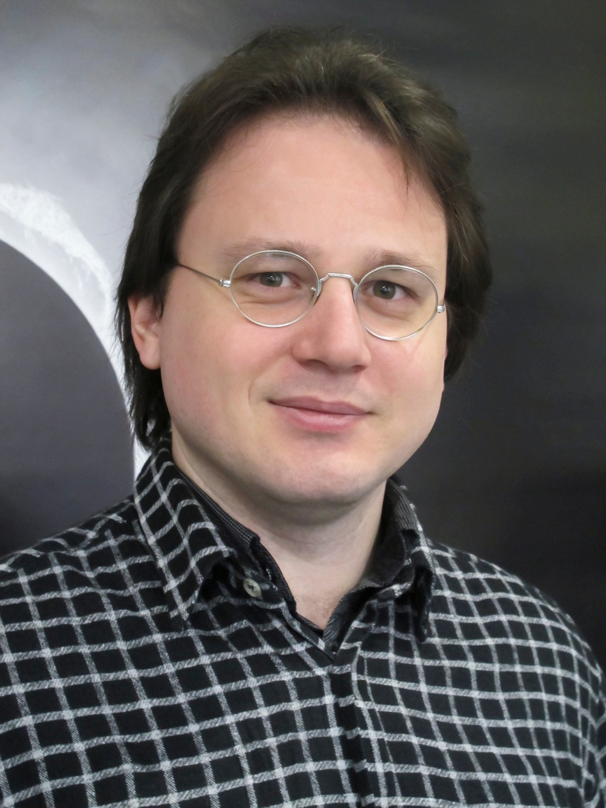

Vid Iršič
Senior Lecturer in Astrophysics
Centre for Astrophysics Research, University of Hertfordshire
Contact:
About Me
I am a cosmologist and Senior Lecturer at the University of Hertfordshire.
My research sits at the intersection of cosmology, galaxy formation, and astro-particle physics.
I specialize in using the intergalactic medium and large-scale structure to probe the
fundamental nature of our Universe.
Career Path
- 2025 – Present: Senior Lecturer, University of Hertfordshire, UK
- 2024 – 2025: IFPU Fellow, Institute for Fundamental Physics of the Universe / SISSA, Italy
- 2019 – 2024: Kavli Senior Fellow, Kavli Institute for Cosmology, University of Cambridge, UK
- 2016 – 2019: Research Associate, University of Washington, Seattle, USA
- 2013 – 2016: Postdoctoral Researcher, ICTP, Trieste, Italy
- 2010 – 2013: PhD in Physics, University of Ljubljana, Slovenia
Research Interests
My work involves high-resolution numerical simulations and large-scale spectroscopic surveys to investigate:
- The Lyman-α Forest: Using the IGM as a tool for precision cosmology.
- Large Scale Structure: Including recent work on the Lyman-α 3D flux power spectrum.
- Dark Matter Nature: Testing models beyond CDM, such as Warm Dark Matter and Ultra-light Axions.
- Cosmological Simulations: Utilizing the Sherwood-Relics and xFABLE suites.
Collaborations
DESI Euclid LISA WEAVE WST
Teaching & Group
Teaching: Information on current modules at the University of Hertfordshire will be updated soon.
Group: I have previously supervised students at Cambridge and SISSA. Future opportunities for PhD and MSc research will be listed here.